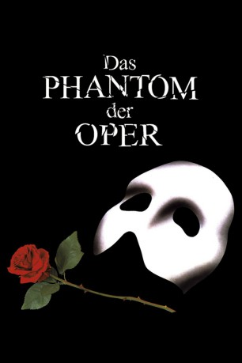

#6234 Das Phantom der Oper
Alternativ: The Phantom of the Opera
Auszeichnungen: für 3 Oscars nominiert
 
 IMDB-Wertung: 7.3 / 10
IMDB-Wertung: 7.3 / 10  Metascore: 0
Metascore: 0 
1870: Das Opernpalais Opera Populaire hat seine Glanzzeit. Andre und Firmin, die neuen Besitzer, stellen sich und ihren jungen Förderer Raoul dem Ensemble vor. Das Chormädchen Christine erkennt in Raoul ihre Jugendliebe wieder, die sie nach dem Tod ihrer Eltern nicht gesehen hat. Doch die Proben stehen unter keinem guten Stern, denn das mysteriöse Phantom betrachtet die Opera Populaire als sein Theater und nimmt unter Androhung von "Unfällen" Einfluss darauf, wie die Stücke in Zukunft aufgeführt werden sollen...
Jahr: 2004
Dauer: 92 Minuten
FSK: 6
Land: England Studio: Concorde FilmverleihTonspuren:
Untertitel: Deutsch,
Auflösung: 1080p (1472x1080) Größe: 7106 MB
Genre: Thriller, Drama, Liebe, Musical
Regisseur:  Joel Schumacher
Joel Schumacher
Drehbuch: Matthias Schweighöfer
Soundtrack:
Darsteller:
 Gerard Butler als The Phantom
Gerard Butler als The Phantom Emmy Rossum als Christine
Emmy Rossum als Christine Patrick Wilson als Raoul
Patrick Wilson als Raoul Miranda Richardson als Madame Giry
Miranda Richardson als Madame Giry Minnie Driver als Carlotta
Minnie Driver als Carlotta Ciarán Hinds als Firmin
Ciarán Hinds als Firmin Simon Callow als Andre
Simon Callow als Andre Victor McGuire als Piangi
Victor McGuire als Piangi- Jennifer Ellison als Meg Giry
- Murray Melvin als Reyer
 Kevin McNally als Buquet
Kevin McNally als Buquet James Fleet als Lefevre
James Fleet als Lefevre- Judith Paris als Carlotta's Seamstress
 Paul Brooke als Auctioneer
Paul Brooke als Auctioneer- Ramin Karimloo als Christine's Father
- Lucy Casson als Ballet Tart
- Jonathan D. Ellis als Fop
- David Langham als Fop #1 / Male Ensemble
- Chris Jarvis als Ballet Boy / Flamenco Dancer / Masquerade Dancer
- Elena Buda als Ballet Girl
- Pascal Langdale als Flamenco Dancer
- Beth Sheather als Flamenco Dancer
- Sandra Eloani als Flamenco Dancer
- Gavin Lee als Male Masquerade Dancer
- Kasper Cornish als Male Masquerade Dancer
- Lisa Stevens als Female Masquerade Dancer
 Leigh Daniels als Female Masquerade Dancer
Leigh Daniels als Female Masquerade Dancer- Imogen Bain als Carlotta's Maid
- Miles Western als Carlotta's Wigmaker
- Halcro Johnston als Passirino
- Oliver Chopping als Porter
- Alison Skilbeck als Nun / Nurse
- Lee Sellers als Chauffeur
- Chris Overton als Young Phantom
- Jesika Cannon als Young Christine
- Annabel Porter als Young Meg
- Laura Hounsom als Young Madame Giry
- Lorraine Stewart als Ballet Tart
- Jose Tirado als Lead Male Dancer / Flamenco Dancer / Masquerade Dancer
- Sebastien Torkia als Ballet Boy
- Liesl Dowsett als Ballet Girl / Masquerade Dancer
- Greet Botterman als Ballet Girl / Masquerade Dancer
- Kirsty Tapp als Ballet Girl / Masquerade Dancer
- Amy Lawson als Ballet Girl / Masquerade Dancer
- Tess Cunningham als Ballet Girl / Masquerade Dancer
- Kathryn Dunn als Ballet Girl / Flamenco Dancer
- Pia Driver als Ballet Girl / Flamenco Dancer / Masquerade Dancer
- Sophia Hurdley als Ballet Girl
- Mark Carroll als Male Ensemble
- Brian Wheeler als Opera Chorus
Datei: X:\2004(N-Z)\Phantom der Oper, Das (2004, FSK6, 1472x1080).mkv seit 22.05.2017
Festplatte: HD 2003-2004-2005(A-F)
 Es gibt insgesamt 54 Filme in der Gruppe '2004(N-Z)'
Es gibt insgesamt 54 Filme in der Gruppe '2004(N-Z)'